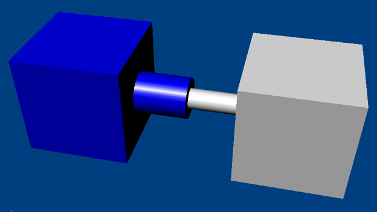

A cylindrical joint permits both relative translational and rotational movement between two bodies along a single axis (i.e., the bodies are allowed to both slide and twist along the axis of the joint). It is usually necessary to add joint limits to prevent the bodies from getting too far from each other along the joint axis. If the distance becomes too great, then the SDK can have difficulty maintaining the joint constraints (see Joint Limits).
An example for a cylindrical joint is a telescopic radio antenna. Another example is a piston on a machine such as a steam engine.
DOFs removed: 4
DOFs remaining: 2
|
Parameter |
Description |
| actor[0] | First actor |
| actor[1] | Second actor |
| localAnchor[0] | Point on the slide axis in the first actor's frame. |
| localAnchor[1] | Point on the slide axis in the second actor's frame (the anchor points should coincide). |
| localAxis[0] | The slide axis in the first actor's frame. |
| localAxis[1] | The slide axis in the second actor's frame (should coincide with localAxis[0] in the global frame). |
NOTE: When setting localAnchor[] it is generally convenient to
use
setGlobalAnchor() to set the anchor with a world space point.
NOTE: When setting localAxis[] it is generally convenient to use
setGlobalAxis() to set the axis with a world space axis.
NOTE: When specifying the joint axis it is also important to specify
the
localNormal[] which should be orthogonal to the localAxis[]. The
localNormal[] is needed to specify joint limits.
NxCylindricalJointDesc cylDesc;
cylDesc.actor[0] = actor0;
cylDesc.actor[1] = actor1;
cylDesc.setGlobalAnchor(globalAnchor);
cylDesc.setGlobalAxis(globalAxis);
NxJoint* joint = gScene->createJoint(cylDesc);
joint->setLimitPoint(globalAnchor);
//Add limiting planes (to restrict how far the bodies can slide relative to each other).
joint->addLimitPlane(-globalAxis, globalAnchor + 1 * globalAxis);
joint->addLimitPlane(globalAxis, globalAnchor - 1 * globalAxis);